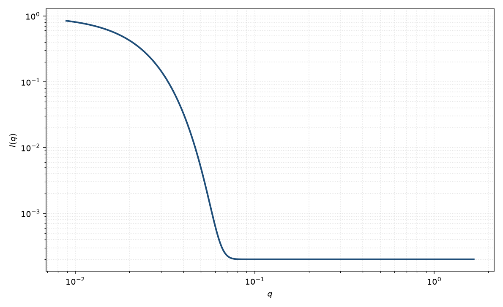

Guinier
Guinier
适用场景
当只关心整体尺寸、不假定具体外形时，Guinier 分析给出低 $q$ 的回转半径。典型对象包括：蛋白质与柔性链的整体 $R_g$、任意凸形状稀释颗粒的尺寸估计，以及尚未选定几何模型前的定标。
适用窗口约为 $qR_g\lesssim 1$。$\log I$ 对 $q^2$ 呈直线，截距是前向散射 $I(0)$。一旦出现振荡极小、幂律尾或相关峰，应离开纯 Guinier，改用完整形式因子或 Guinier–Porod / 统一模型。
稀溶液、相互作用可忽略时 $I(0)$ 正比数密度、体积平方与衬度平方。浓体系低 $q$ 被 $S(q)$ 压低或抬升时，不要把表观 $R_g$ 当成粒子尺寸。
物理图像
任意有限物体的散射在 $q\to 0$ 都可对相位作 Taylor 展开。第一项给出 $I(0)$，第二项把质量分布的二阶矩收成 $R_g$，于是 $I(q)\simeq I(0)\exp(-q^2 R_g^2/3)$。这是形状无关的：球、椭球、链、空心壳只是 $R_g$ 与几何参数的换算不同。
取向平均已经包含在各向同性 $I(q)$ 里。磁性通道若磁化分布与核密度不同，磁 $R_g$ 不必等于核 $R_g$。
示意图

核心公式
出发点
稀释、取向无规的有限物体，相干散射振幅是衬度对平面波相位的体积分。不假定外形，只要求 $\Delta\rho(\mathbf{r})$ 有紧支集：
$$F(\mathbf{q})=\int \Delta\rho(\mathbf{r})\,\mathrm{e}^{i\mathbf{q}\cdot\mathbf{r}}\,\mathrm{d}^3r,\qquad I(\mathbf{q})=\lvert F(\mathbf{q})\rvert^2.$$把原点放在散射长度质心，使 $\int\mathbf{r}\,\Delta\rho(\mathbf{r})\,\mathrm{d}^3r=0$。各向同性粉末平均后强度只依赖 $q=\lvert\mathbf{q}\rvert$。
推导
低 $q$ 把相位 Taylor 展开：$\mathrm{e}^{i\mathbf{q}\cdot\mathbf{r}}=1+i\mathbf{q}\cdot\mathbf{r}-(\mathbf{q}\cdot\mathbf{r})^2/2+O(q^3)$。代入 $F$：零阶给出 $F(0)=\int\Delta\rho=\Delta\rho_{\mathrm{eff}}V$；一阶因质心选择而消失。
二阶项经取向平均 $\langle(\mathbf{q}\cdot\mathbf{r})^2\rangle=q^2\langle r^2\rangle/3$（三维）。回转半径按衬度二阶矩定义
$$R_g^2=\frac{\int r^2\Delta\rho(\mathbf{r})\,\mathrm{d}^3r}{\int\Delta\rho(\mathbf{r})\,\mathrm{d}^3r}.$$于是 $F(q)=F(0)\,(1-q^2 R_g^2/6+O(q^4))$。强度取模方，交叉到 $q^2$ 为止：
$$\frac{I(q)}{I(0)}=1-\frac{q^2 R_g^2}{3}+O(q^4).$$把前两项看成指数的 Taylor：$\mathrm{e}^{-x}=1-x+O(x^2)$，即 Guinier 近似
$$I(q)=I(0)\,\exp(-q^2 R_g^2/3).$$指数形式与多项式在 $q^2$ 阶精确一致；更高阶由具体外形决定，Guinier 不再给出。
低 $q$ 与渐近
适用窗口 $qR_g\lesssim 1$。直线形式 $\ln I=\ln I(0)-q^2 R_g^2/3$，斜率直接读 $R_g$。这是形状无关的：$R_g$ 与几何的换算才依赖外形——均匀球 $R_g=R\sqrt{3/5}$，薄球壳 $R_g=R$，高斯链 $R_g^2=Nb^2/6$。
超出窗口后出现 $q^4$ 及更高阶，Guinier 直线向下弯，表观 $R_g$ 偏小。高 $q$ 的幂律或振荡不属于本式；那些是 Porod 或完整 $P(q)$ 的内容。准一维/二维物体应改用带维数 $s$ 的广义 Guinier（见 Guinier–Porod），指数分母换成 $3-s$。
参数表
| 参数 | 符号 | 含义 | 单位 | 典型范围 |
|---|---|---|---|---|
| 回转半径 | $R_g$ | 质量分布二阶矩的方均根 | Å | 10–1000 Å |
| 前向散射 | $I(0)$ | 外推到 $q=0$ 的强度 | 与强度单位一致 | 由绝对标定或自由拟合 |
| 标度 / 本底 | $\mathrm{scale}$, $B$ | 前置因子与常数本底 | 与强度单位一致 | 实验相关 |
拟合注意
取向：粉末各向同性数据里 $R_g$ 是标量；二维各向异性应分方向做 Guinier，不要把单方向斜率当成整体 $R_g$。
多分散使强度加权 $R_g$ 偏向大颗粒，$I(0)$ 按体积平方加权。报告时须声明加权方式。磁性：核磁 SLD 与核 SLD 是不同通道，磁 Guinier 只约束磁化分布的 $R_g$。
可辨识性：本底、聚集与 $S(q)$ 都会弯曲 Guinier 直线。窗口过宽会吸收高阶项，使 $R_g$ 偏小。需要至少一个独立尺寸（电镜、SEC、完整 $P(q)$）才能把 $R_g$ 从本底里分开。
相近模型
- Guinier–Porod — 把 Guinier 接到高 $q$ 幂律，而不是截断拟合窗口。
- 统一幂律–Rg — 多层级 $R_g$ 与幂律的同一套语言。
- 均匀球 — 已知球形时用 $R_g=R\sqrt{3/5}$ 换成半径。
参考文献
- Guinier, A. La diffraction des rayons X aux très petits angles. Ann. Phys. 1939, 11, 161–237. DOI: 10.1051/anphys/193911120161
- Guinier, A.; Fournet, G. Small-Angle Scattering of X-rays. Wiley: New York, 1955.